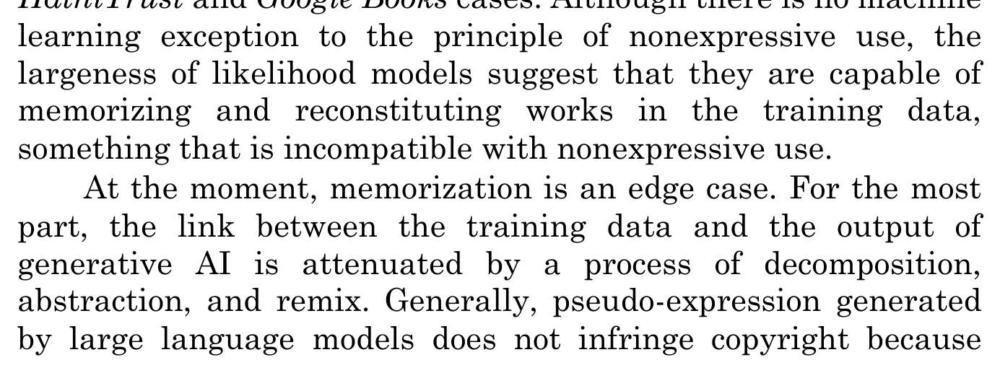
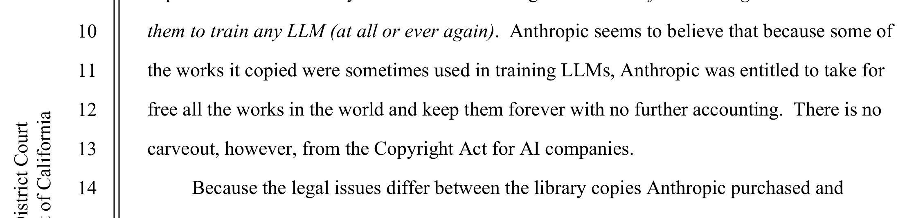

Page 03 of 11 — the claim
Claim: Judge the Conduct, Not the Company
The Claim — read into the record
Neither side of the AI industry’s copying war can exist under the rules each side states in public. If learning from the sum of the internet’s publicly reachable data is considered fair use, labs have little legal ground to stand on against attacks from distillers. If taking their models’ knowledge counted as theft, their own models would violate copyright laws.
This doesn’t mean there isn’t an answer. A hypocrite can still be right. What the hypocrisy proves is smaller: nobody in this argument is neutral. Both sides have it in their best interests to offer solutions that track their interests. This means we have to build the rule on the one thing outsiders can monitor — conduct: how the models acquire human work, and how much their output builds on the creative IP stored within their transformers.
Press a rule. Walk it to its end.
→ then distillation is fair use too.
→ then the models were built on theft.
Why conduct, and not intent or identity
The Bartz court even quoted an exhibit in the record on what the models retain:
Exhibit 03-A · Bartz v. Anthropic, order p. 11“The LLMs ‘memorize[d] A LOT, like A LOT.’”
If the machines are able to reproduce copies on a whim, the “we only learned” argument stops working as a defense and becomes a technical question. The only way to get a concrete answer is by auditing the conduct of the parties involved.
The rule is buildable, not hypothetical
Matthew Sag, who defends AI training as “nonexpressive use” (295), refuses to wave the risk away:
Exhibit 03-B · Sag, Houston Law Review, p. 295“At the moment, memorization is an edge case.”

Looking carefully at his wording, you can see Sag hedging. He explains later why the problem keeps growing:
Exhibit 03-D · Sag, p. 327“[T]he more abstractly a copyrighted work is protected, the more likely it is that a generative AI model will ‘copy’ it.”
He came up with a list of 10 “Best Practices for Copyright Safety” (337–44). All of them focus on regulating what systems do instead of on ownership.
What would prove me wrong
If the fights over distillation resolve on contract/computer-fraud grounds instead of new copyright laws being enacted, then it means the system failed to step in and make a decision, and instead let the companies police it between themselves.

{kind=link}